Het zwembadThe swimming pool
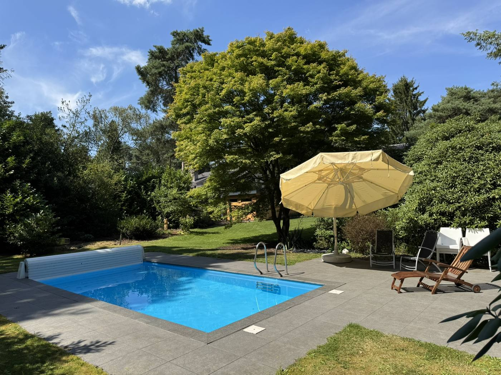
Het zwembad wordt verwarmd door een warmtepomp. De temperatuur staat vast ingesteld tussen de 24 en 26 graden, daar hoef je niets aan te doen.
De afdekking op- en afrollen
Voor je gaat zwemmen moet de afdekking eerst opgerold worden. Dat gaat elektrisch, met een sleuteltje in het contactslot op de kast naast het bad.
- Oprollen: draai de sleutel naar links, stand I. De schakelaar blijft daar vanzelf staan. Zet het contact meteen terug op 0 zodra het dek opgerold is, anders slaat de stop er uit veiligheid vanzelf uit.
- Afrollen: draai naar stand II en houd de sleutel daar met de hand vast tot het dek helemaal is afgerold.
- Leg het sleuteltje daarna terug op zijn plek: op de deksel van de emmer met chloorblokken in het tuinhuisje.
Chloor
Om de twee weken gaat er een nieuw chloorblok in de skimmers. Bij aankomst zitten er verse blokken in. Is het erg warm, dan mag het na anderhalve week. De emmer staat in het tuinhuisje bij het zwembad.
Schoonhouden
Op het terras ligt een blauw schepnet. Haal daar elke dag voor het zwemmen de bladeren, naalden en ander vuil mee uit het water.
Blijven jullie langer dan een week, dan vragen we ook de bodem te reinigen. Daarvoor is er een zwembadrobot, te bedienen met de app My Dolphin:
- Rol de blauwe slang af en sluit de connector aan op het bedieningspaneel.
- Pak de robot bij de hendel, leg hem in het water en duw hem omlaag tot hij naar de bodem zakt.
- Steek de stekker van het bedieningspaneel in het stopcontact; gebruik een verlengsnoer.
- Open de app, ga met je telefoon dicht bij het bedieningspaneel staan en wacht tot de app de robot gevonden heeft. Druk dan op ‘begin met schoonmaken’.
- Hij doet er ongeveer tweeënhalf uur over. Haal hem daarna voorzichtig met de blauwe slang uit het water en maak de filters meteen schoon voor je hem terugzet.
De app. Onze robot is een Dolphin Zenit 20. Zoek in de App Store of Google Play op MyDolphin Plus van Maytronics. De officiële handleiding en de app-handleiding staan op manuals.maytronics.com.
Liever even meekijken? Deze twee filmpjes laten het hele gebruik zien:
youtube.com/watch?v=CIGXGez-l-I
youtube.com/watch?v=5fSgx6yjnC8
Het tuinhuisje
Het tuinhuisje bij het zwembad heeft zijn eigen sleutel; die zit aan de sleutelbos uit het sleutelkastje. Doe hem weer op slot als jullie weggaan.
The pool is heated by a heat pump. The temperature is fixed between 24 and 26 degrees, so there is nothing to adjust.
Rolling the cover on and off
Before swimming, the cover has to be rolled back. That works electrically, with a small key in the switch on the housing beside the pool.
- Rolling open: turn the key left, to position I. The switch stays there by itself. Turn it straight back to 0 as soon as the cover is open, or the safety cut-out will trip.
- Rolling closed: turn to position II and hold the key there by hand until the cover is fully across.
- Afterwards put the key back where it lives: on the lid of the chlorine bucket in the poolhouse.
Chlorine
Every two weeks a fresh chlorine block goes into the skimmers. There are new ones in when you arrive. In very warm weather, after a week and a half is fine. The bucket is in the poolhouse by the pool.
Keeping it clean
There is a blue skimming net on the terrace. Please use it each day before swimming to lift out leaves, pine needles and anything else floating about.
If you stay longer than a week, we would also ask you to clean the floor of the pool. There is a pool robot for that, operated through the My Dolphin app:
- Unroll the blue hose and connect it to the control unit.
- Take the robot by its handle, lay it in the water and push it down until it sinks to the bottom.
- Plug the control unit into a socket; use an extension lead.
- Open the app, stand close to the control unit with your phone and wait until it finds the robot. Then tap ‘start cleaning’.
- It takes about two and a half hours. Lift it out carefully by the blue hose afterwards and clean the filters straight away before putting it back.
The app. Our robot is a Dolphin Zenit 20. Search the App Store or Google Play for MyDolphin Plus by Maytronics. The official manual and the app guide are at manuals.maytronics.com.
Rather watch first? These two videos show the whole routine:
youtube.com/watch?v=CIGXGez-l-I
youtube.com/watch?v=5fSgx6yjnC8
The poolhouse
The poolhouse by the pool has its own key, on the keyring from the key safe. Please lock it again when you go out.
Let op: bij het openen van de emmer en van het zakje om het blok komen chloordampen vrij. Sluit de deksel daarna weer goed af.
Please note: opening the bucket and the wrapper around the block releases chlorine fumes. Close the lid again properly afterwards.
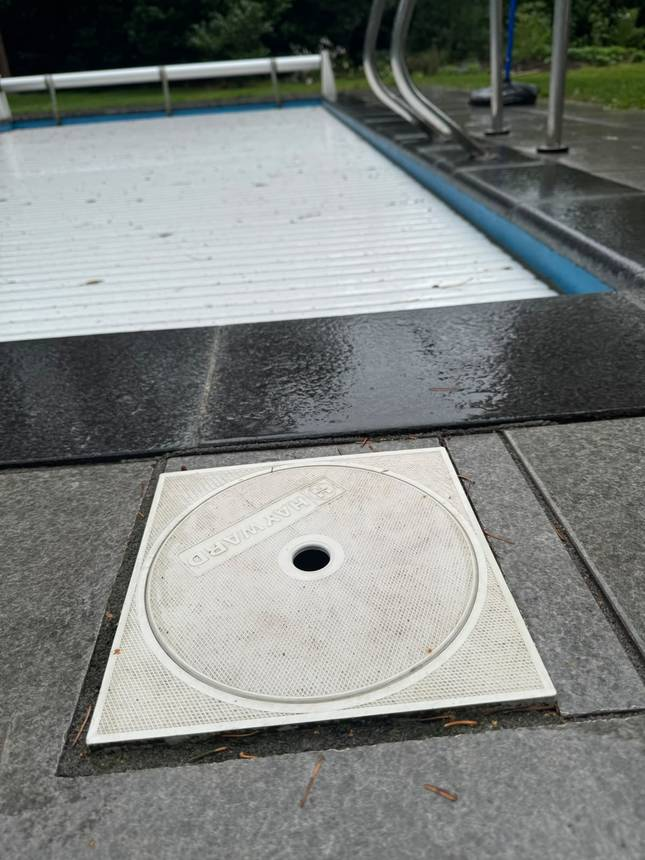
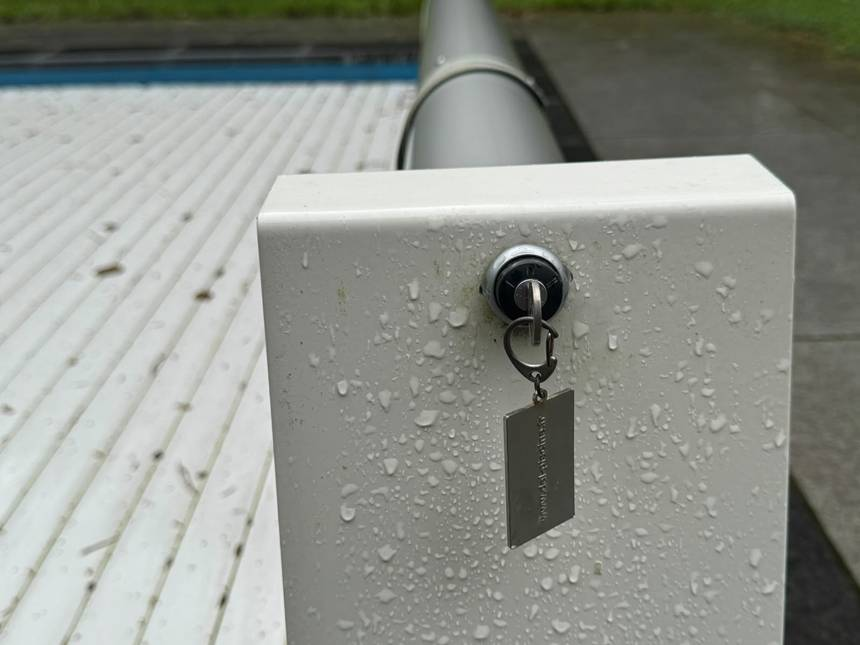
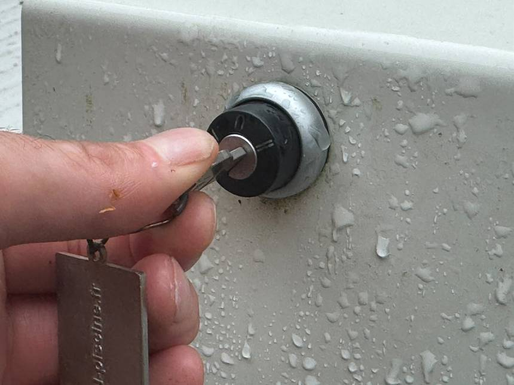
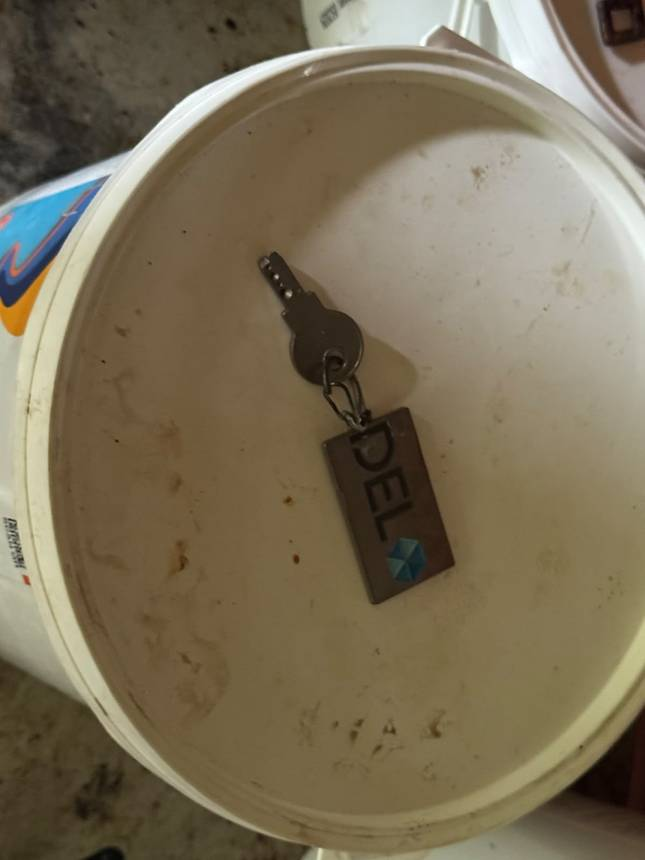
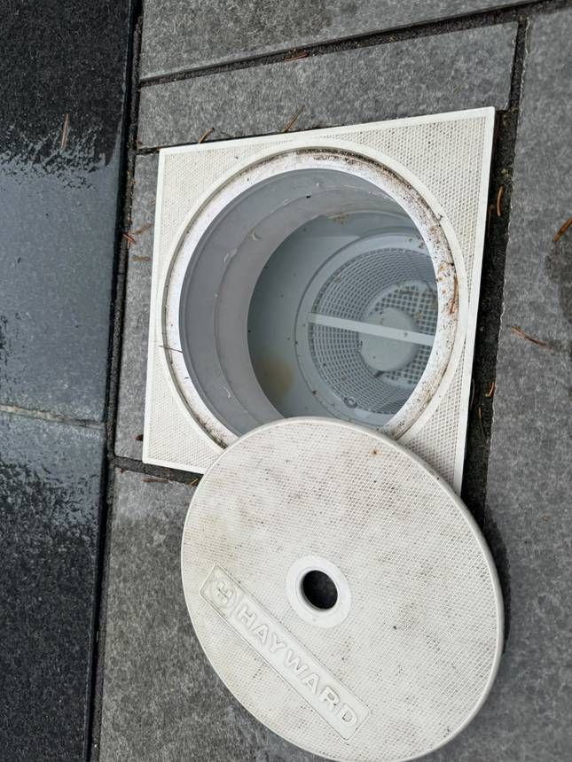
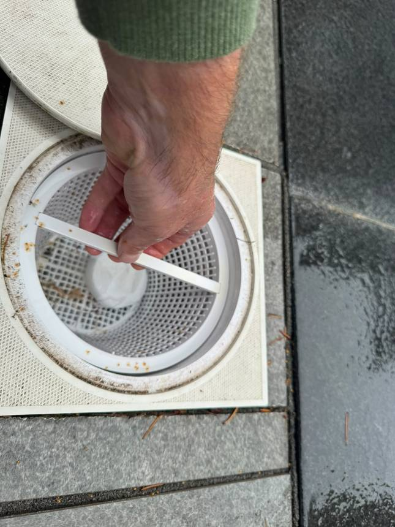
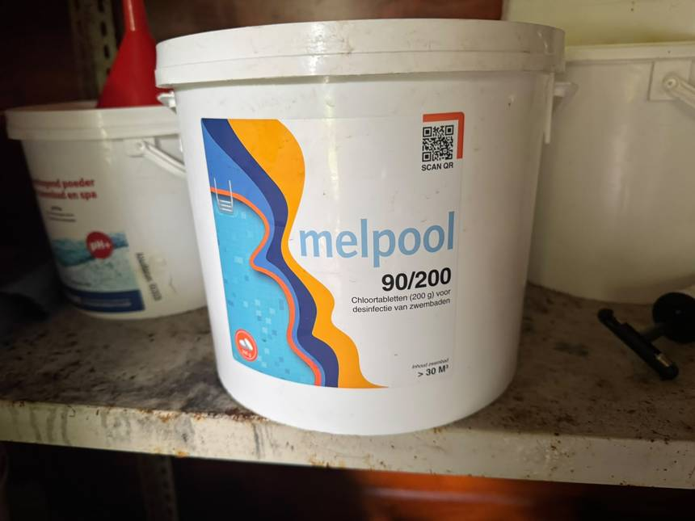
De tuin sproeienWatering the garden
De tuin wordt gesproeid met water uit onze eigen bron, die tientallen meters diep op het perceel zit. In de zomer, bij droog weer, vragen we jullie de tuin te sproeien.
- Zet de bron aan met de knop in de garage of bijkeuken. Je hoort een klikje: de bron staat aan.
- In de tuin zitten verschillende kranen. De slangen koppel je erop met een GEKA- of bajonetaansluiting.
- Aan de andere kant van de slang sluit je een sproeier aan. Sommige sproeiers staan vast, andere kun je verplaatsen.
- Met de twee ringen van de sectorbegrenzer, onderaan de sproeierkop, stel je in over welk deel van de cirkel hij sproeit. Schuif ze uit elkaar voor een grotere sector.
- Zet de bron na gebruik weer uit.
The garden is watered from our own well, which reaches tens of metres down into the plot. In summer, in dry weather, we would ask you to water the garden.
- Switch the well on with the knob in the garage or utility room. You will hear a click: the well is running.
- There are taps at several points in the garden. Hoses connect to them with a GEKA or bayonet fitting.
- At the other end of the hose you attach a sprinkler. Some are fixed in place, others can be moved.
- The two rings of the sector limiter, at the base of the sprinkler head, set how much of the circle it waters. Slide them apart for a wider arc.
- Switch the well off again when you have finished.
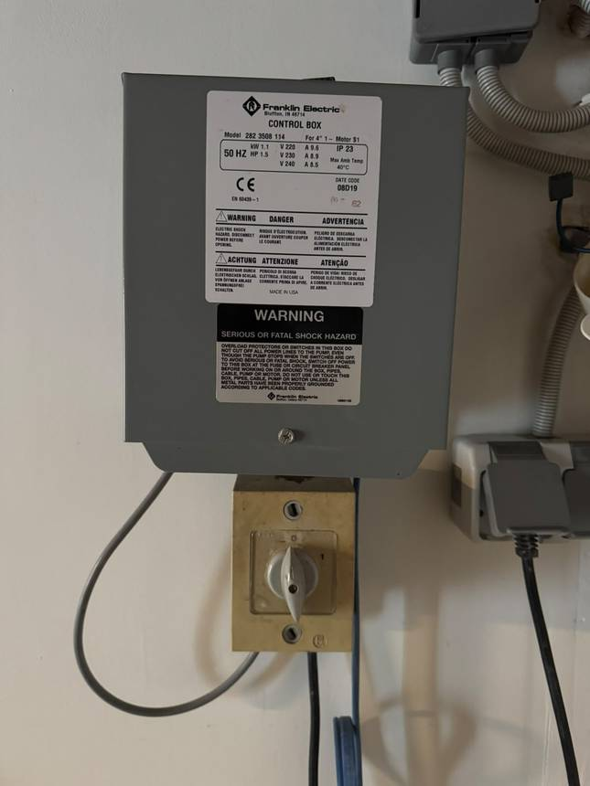
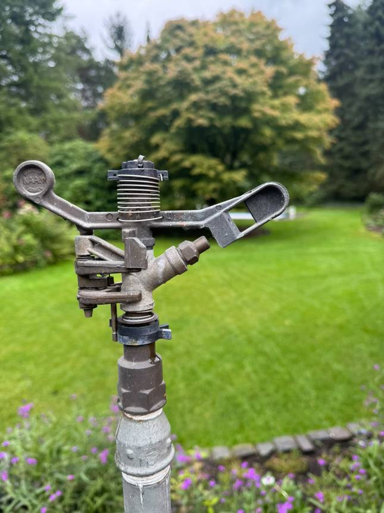
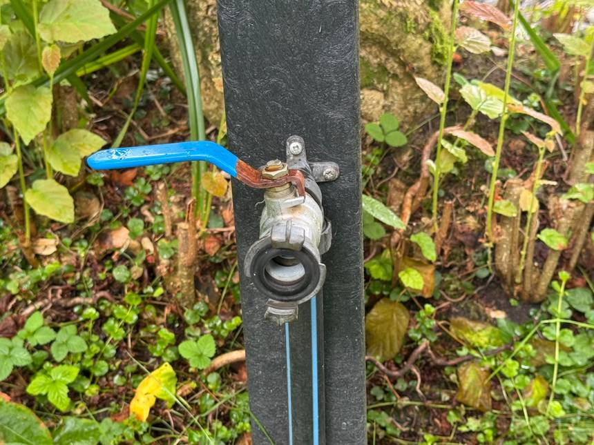
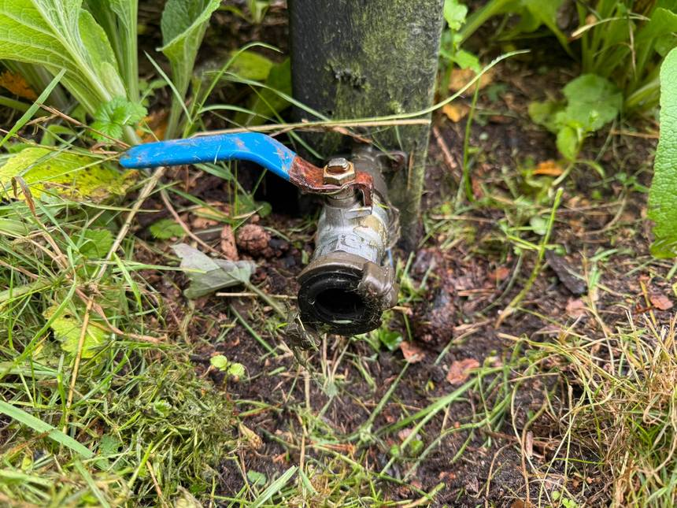
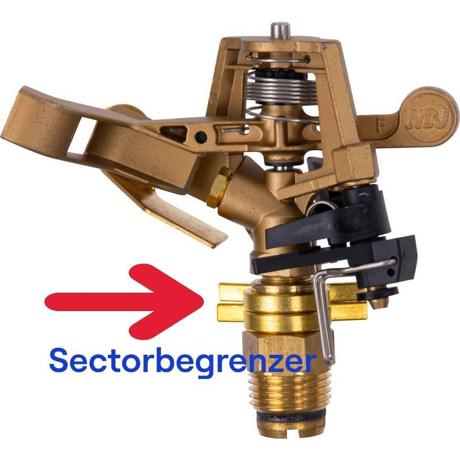